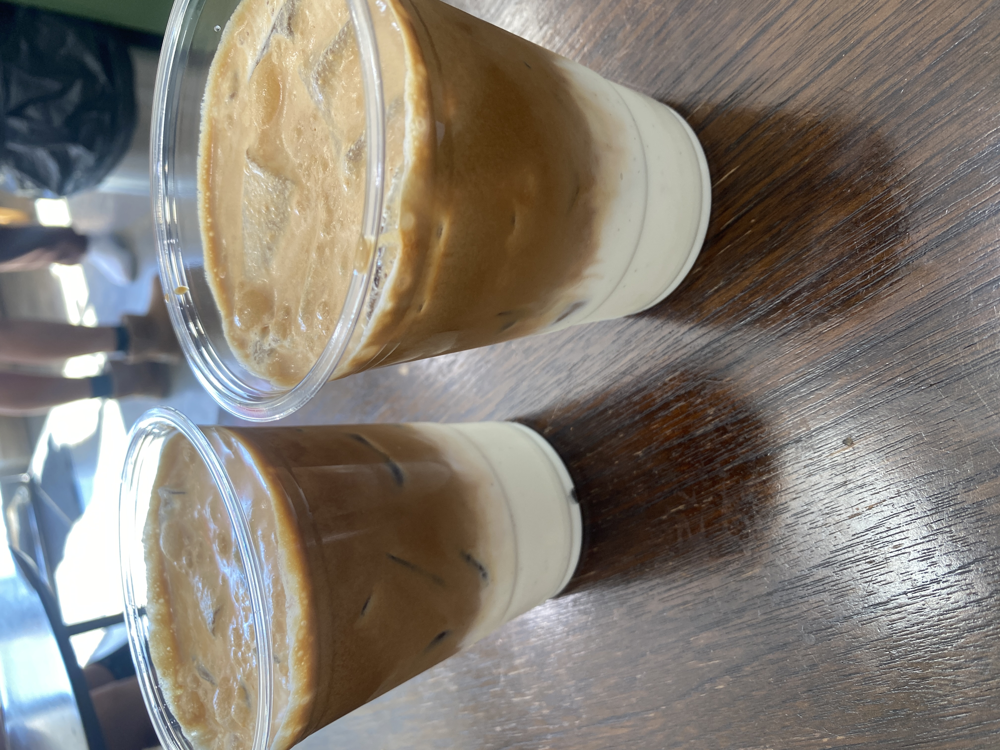
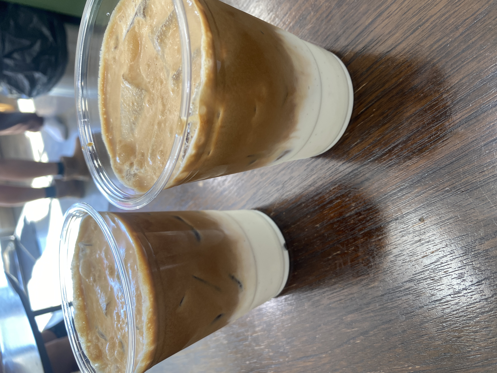

I recently graduated from USC with a unique interdisciplinary background in Computer Science and Linguistics. This combination equips me to bridge the gap between theoretical insights in linguistics and real-world applications in natural language processing.
Working alongside talented peers and faculty, I’ve focused on building innovative solutions in areas such as syntactic analysis, semantic understanding, and language generation..
In parallel with my work in language technologies, I’ve cultivated a strong foundation in data science—focusing on machine learning, user experience (UX) research, and the design of scalable systems. My projects have explored how data-driven insights can inform human-centered design, from evaluating user behavior to optimizing model performance in real-time environments. I’ve also leveraged distributed systems like Apache Spark and Hadoop to process large-scale datasets efficiently, enabling deeper analysis and rapid iteration for both experimental research and production-level deployment.

 
